◀◀ Previously, on LAiDIES
Our heroine got a gorgeous, confident answer from the machine — and caught the one quiet line in it that was completely, confidently wrong. She learned that before her name goes on anything, she checks it like Elle Woods.
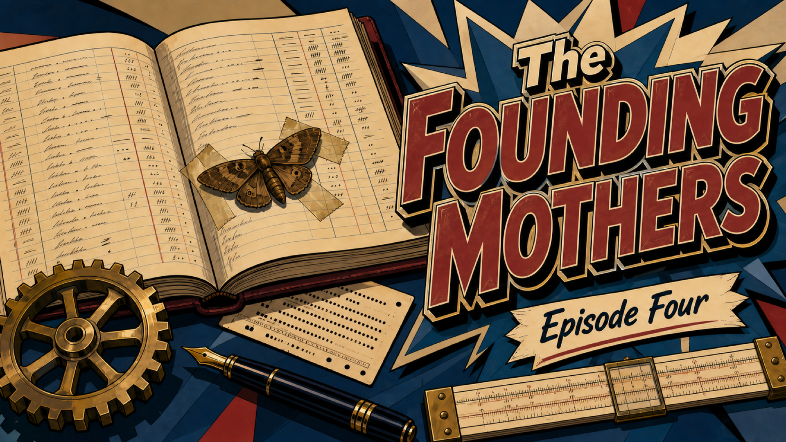
It's a slow Wednesday, and it hits me mid-sentence — I actually stop typing.
I have been talking to this thing every single day for three weeks. I've briefed it, argued with it, caught it lying to my face. And I could not tell you the first thing about where it came from. What it even is. Who made it.
It's like I moved in with someone and realized I'd never once asked to meet their family. And I couldn't help but wonder — this thing that showed up and rearranged my whole workweek: is it actually new? And underneath that: who built it?
Three weeks ago you stopped feeling behind. Then you learned to brief it like a new hire. Last week, to fact-check it like a lawyer. So you can genuinely use the thing now. But I'd learned to drive the car without ever once asking who built the engine. So this week: no new trick. This week's a flashback.
The quiet wing at the back of the LUMINAiRY
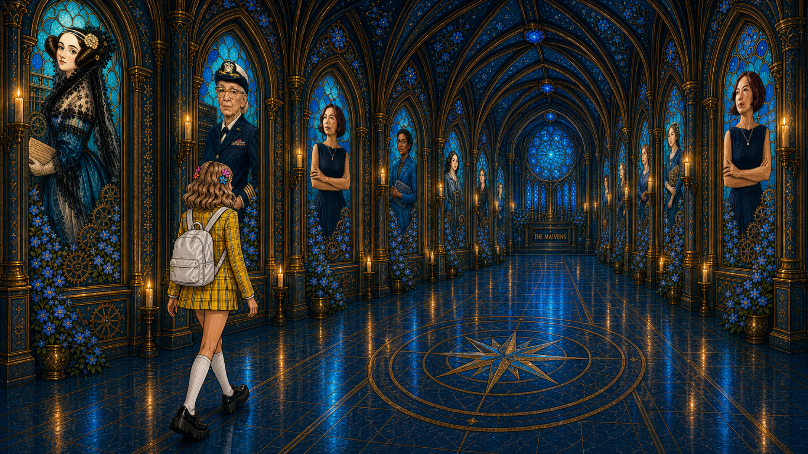
So I went up the hill, to the LUMINAiRY — SUNNYVAiLE's hall of heroes. Everybody knows the front room. But there's a quieter wing behind it I'd never once walked into. No movie stars in there. …Well. Almost no movie stars. Just the women who actually built the thing this whole town is about. They call them the MAiVENS. Sit down in that wing and ask "so, how did we get here" — and they'll tell you the entire story. The lights go soft. Somewhere, a harp. Stay with me. We're going back.
The first algorithm, for a machine nobody had built
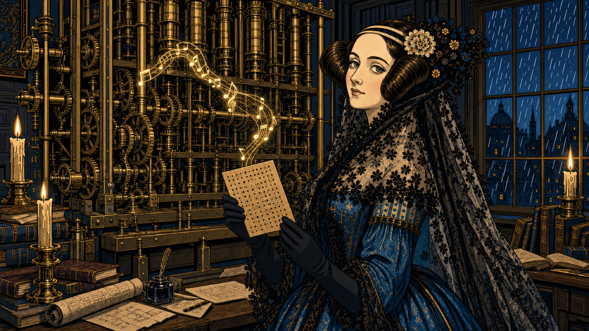
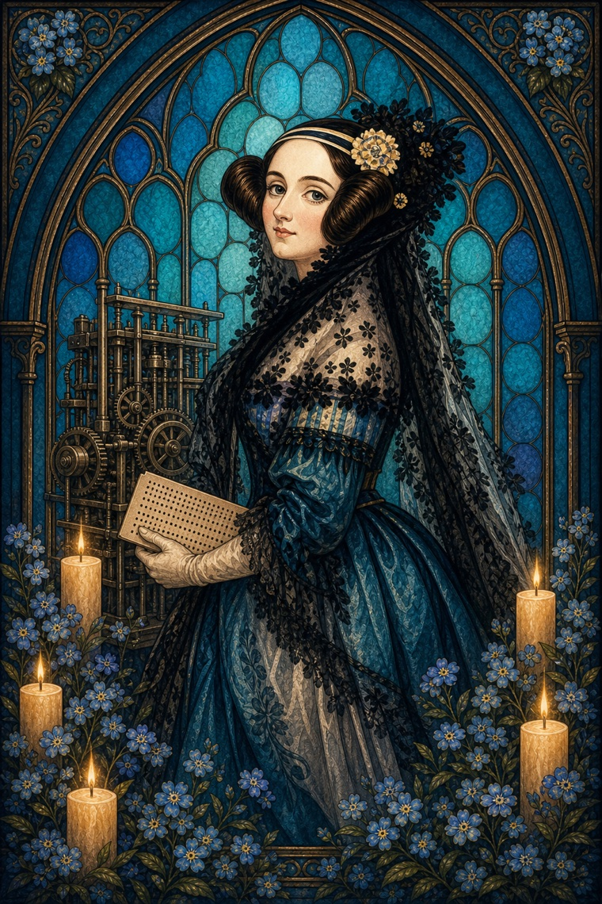
It starts in the eighteen-forties — before the lightbulb — with a young woman staring at a giant mechanical calculator that could do exactly one thing: crunch numbers. Everyone who looked at it saw arithmetic. Ada Lovelace looked at it and saw something else entirely.
She understood the thing no one else did: if a machine can follow instructions written precisely enough, then numbers are only the beginning. It could work with symbols. It could set them to music. So she wrote the instructions down — a method, step by step, for the machine to follow. The first algorithm. And she told us exactly what it could and couldn't be: it has no pretensions to originate anything. It only ever does what we know how to order it to do. (Remember that part. Everyone forgets that part.)
For the next hundred years, they handed the credit to the man whose machine it was — and quietly decided a woman couldn't possibly have done the math.
Inventing between takes
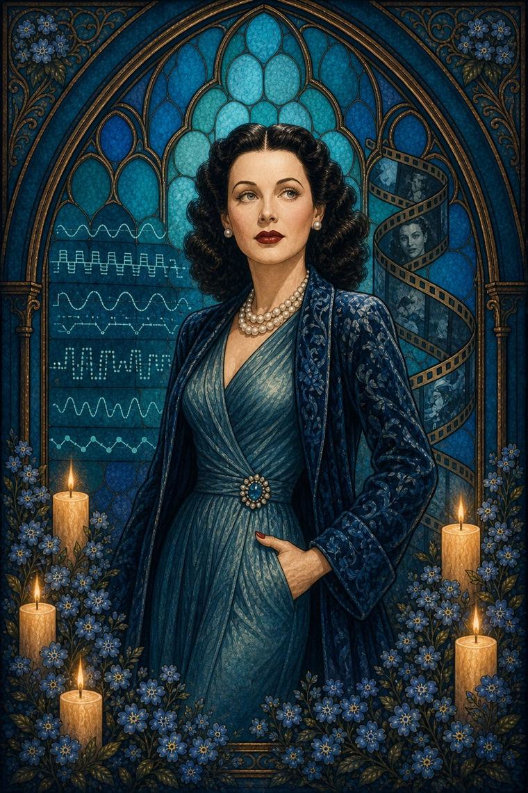
Jump ahead a century, to nineteen forty-two. This one you already know — billed, at the time, as the most beautiful woman in the world. Movie star. Bombshell. And between takes, she was inventing. "It is a very useful thing," she said, "to be underestimated — no one watches what you're actually doing."
There was a war on, and the radio-controlled torpedoes kept getting jammed. So Hedy Lamarr and the composer George Antheil designed a system that hops: the signal leaps from frequency to frequency, too fast to catch — and the receiver hops right along with it. You cannot jam a signal you cannot find. The Navy shelved it. But that idea is in the family tree of the whole wireless world you're standing in — the Wi-Fi, the Bluetooth, the invisible hum that carries everything to everywhere. She never made a dime from it.
Six women, no manual, no language
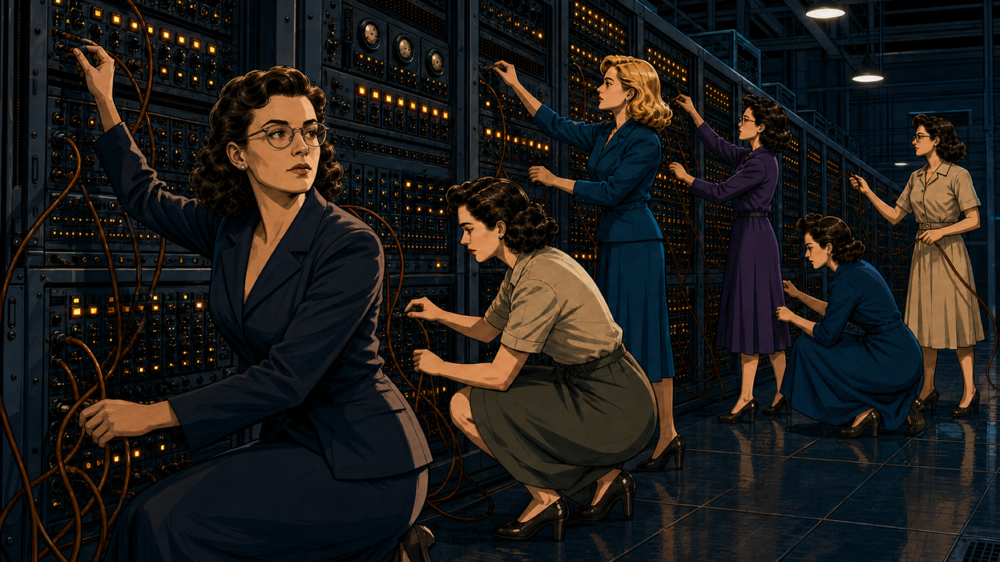
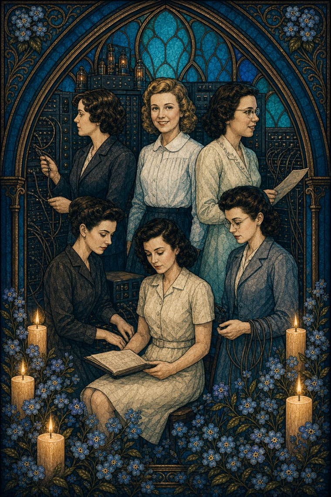
Nineteen forty-five. The war still on, the Army in Philadelphia switches on one of the first true electronic computers — a thirty-ton, room-sized machine called the ENIAC, built to calculate artillery tables. But a machine that new doesn't come with instructions; someone has to teach it, physically, what to do. So the Army hands that job — the part they figured was the tedious part — to six women: Jean, Betty, Kay, Marlyn, Ruth, and Frances. With no manual and no programming language to write in — because one didn't exist yet — they program it by hand, cable by cable, switch by switch, working out how to make a machine follow a plan at all. They are, quite literally, the first programmers.
And when the ENIAC is shown to the press, the men in the photographs get named. The six women — standing right there, at the machine they'd programmed — do not. For decades, people who saw those pictures simply assumed they were models, posed to make the equipment look good. It took about forty years for anyone to go back and learn who they actually were.
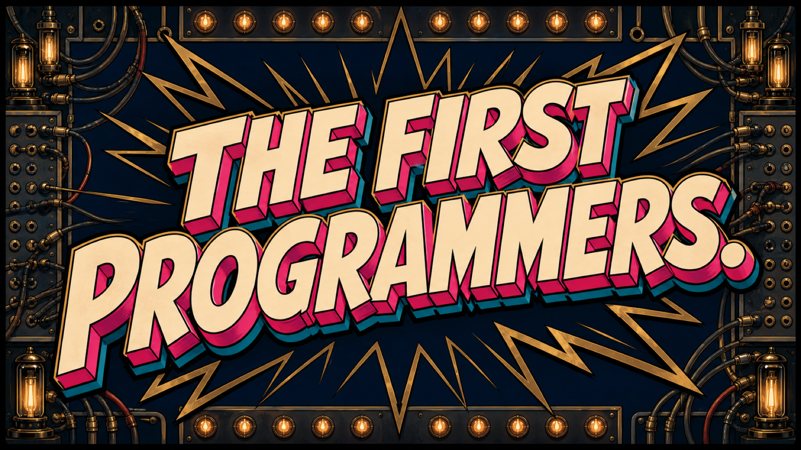
She taught the machine to meet us halfway
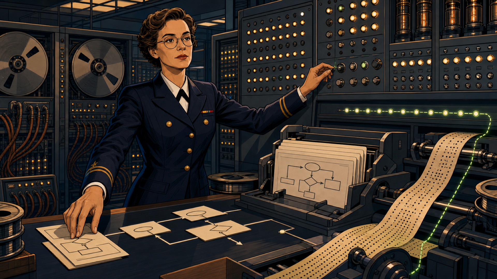
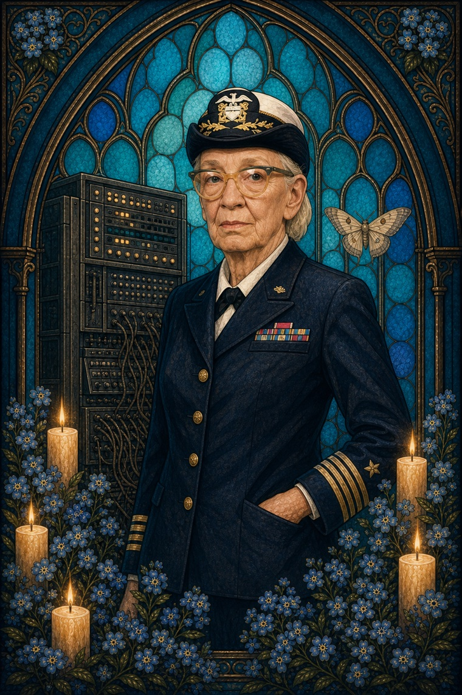
Nineteen fifty-two. The machines are real now — but talking to one is agony. You had to write in raw code, by hand. Enter a mathematician the Navy almost didn't take — too old, they said, at thirty-six. They took her anyway. Thank goodness.
They kept telling Grace Hopper a computer could never understand words. She found that a failure of imagination. Why should a person have to learn to think like a machine? So she built a translator — a compiler. You write what you want in something close to plain English, and it does the converting into code for you. Every app you tap sits on top of that one idea. (When an actual moth once flew into the machine and jammed it, her team taped it into the logbook — "first actual case of a bug being found." That's where debugging comes from.)
The men show up and give it a name
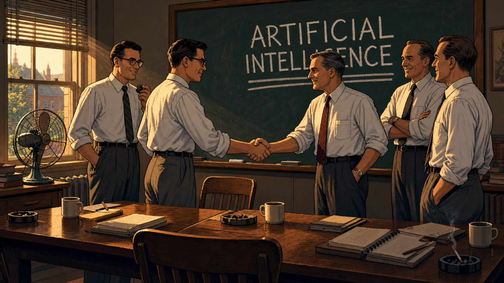
It's right here — nineteen fifty-six — that a handful of men get a room at Dartmouth for the summer, write up a proposal, and christen the whole dream: "artificial intelligence." Names on it as the founding fathers. And then they promise the world it'll be basically solved… by the end of the summer.
It was not solved by the end of the summer.
It wasn't solved for decades. The funding dried up, the promises curdled, and "AI" became a slightly embarrassing thing to say out loud. They call those the AI winters. It got cold more than once. But even in the cold, the work didn't stop.
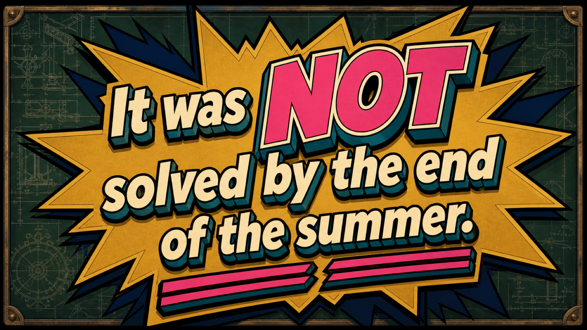
AI became an embarrassing thing to say
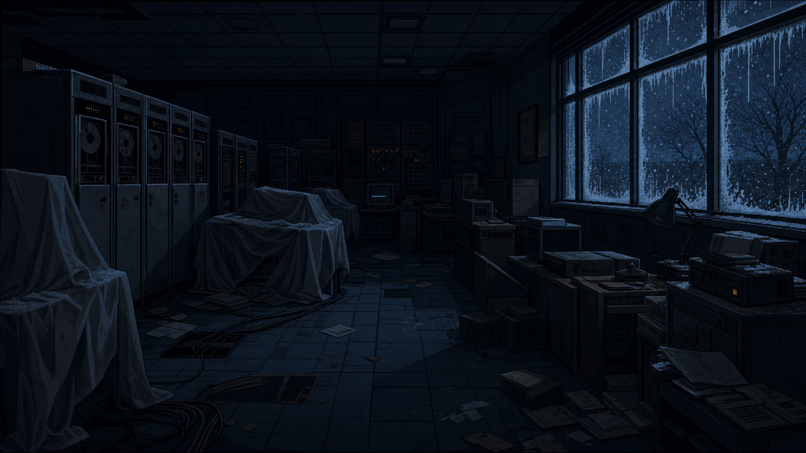
How a machine finds the right thing
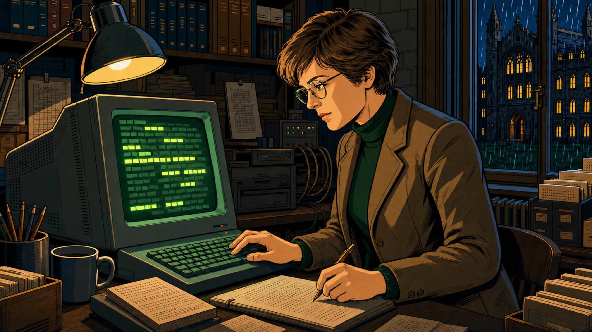
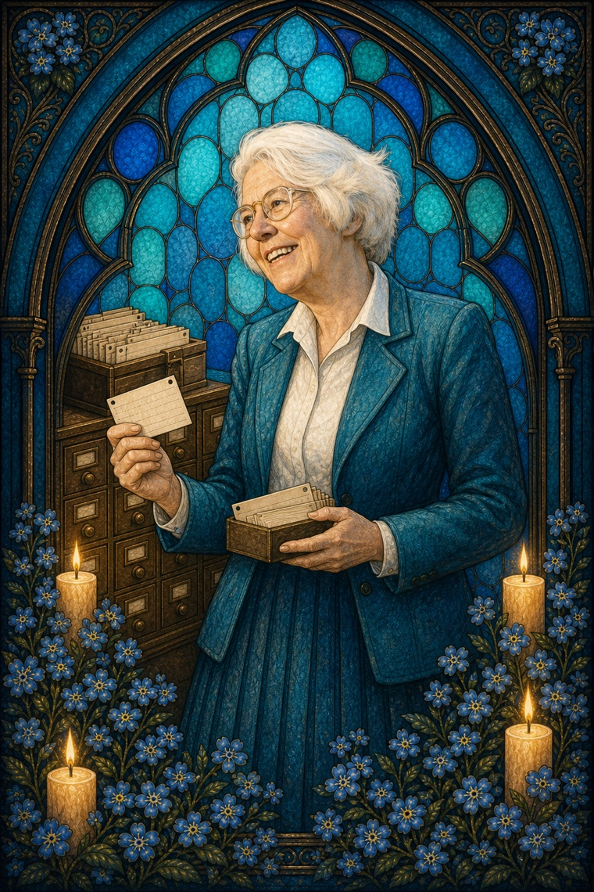
Nineteen seventy-two. A woman at Cambridge cracks a problem that turns out to be enormous: how does a machine find the right thing? Here's the trick Karen Spärck Jones saw — the common words tell you nothing. "The." "And." "Is." Useless. It's the rare words that carry the meaning. So she built a way to weigh them. It is the arithmetic underneath every search box you have ever typed into — and underneath the modern systems that go and look things up before they dare to answer you.
She spent most of her career on short contracts — no permanent post until nineteen ninety-three, which she said plainly was because she was a woman. And she had a line she liked to repeat, that I want carved over the door of this entire episode:
"Computing is too important to be left to men."
Karen Spärck Jones
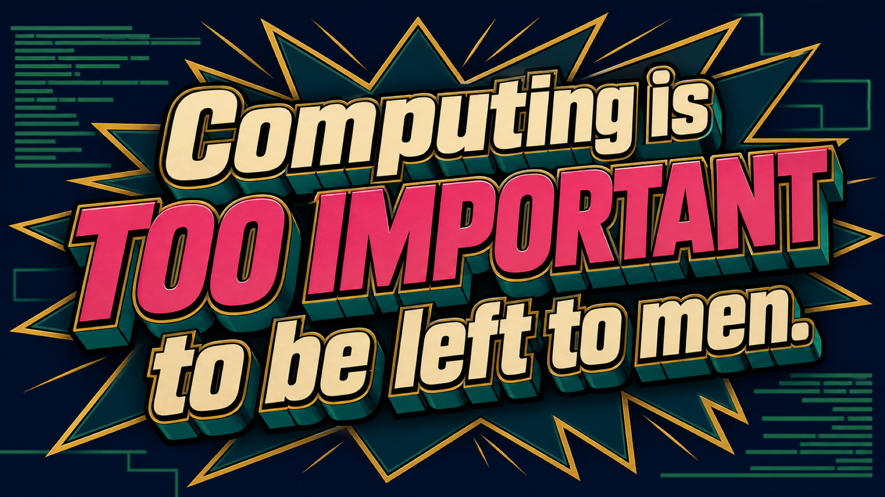
The brain was never the problem


And then — decades later, after almost everyone had given up — the thaw. It comes from a professor at Stanford named Fei-Fei Li, and a heretical idea. Everyone was busy trying to build a smarter brain. She said the brain was never the problem — the problem was we'd never given it enough to look at. So she builds the thing everyone told her was too big to bother with: millions upon millions of labeled images — the training data — so a machine could finally learn what the world actually looks like.
In twenty-twelve, a program trained on her pictures suddenly sees. That is the spark. The "AI boom" people won't stop talking about starts right there, with her data. The world took to calling her the Godmother of AI. Godmother. Not godfather.
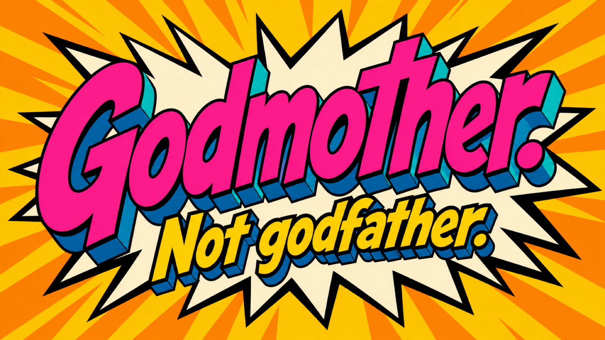
The day it landed on your desk
In twenty-seventeen, a team at Google publishes a design that finally cracks how a machine handles language — and for the first time, the thing can really write. And then, one perfectly ordinary Wednesday — November twenty-twenty-two — someone wraps all of it in a little chat box, puts it online for free, and calls it ChatGPT.
That's the day it landed on your desk — the very desk you were sitting at three weeks ago, feeling behind.
The women who check the whole machine


Joy Buolamwini, a grad student at MIT, goes to use face-detection software — and it can't see her dark skin. Not until she literally holds up a white mask. So she proves it: tests the big commercial systems and shows they fail hardest of all on darker-skinned women.
Timnit Gebru teamed up with a linguist, Emily Bender, to warn that these language machines can sound brilliant while understanding nothing. Bender named it: a stochastic parrot — a bird that mimics speech perfectly, with not the faintest idea what it's saying. Gebru raised it inside Google, and in twenty-twenty she was abruptly gone. Thousands of her colleagues signed their names in protest.
And Kate Crawford maps the part nobody wants to look at — that behind the "magic" is a supply chain of mines, water, electricity, and underpaid human hands. Her line: AI is neither artificial nor intelligent.
These are not the buzzkills at the party. They are the reason the thing you're about to trust is worth trusting. Last week you learned to check the machine. These are the women who check the whole machine.
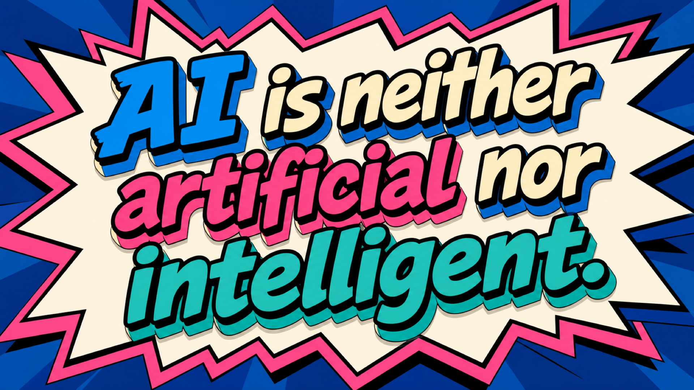
Not magic. Not born last Tuesday.
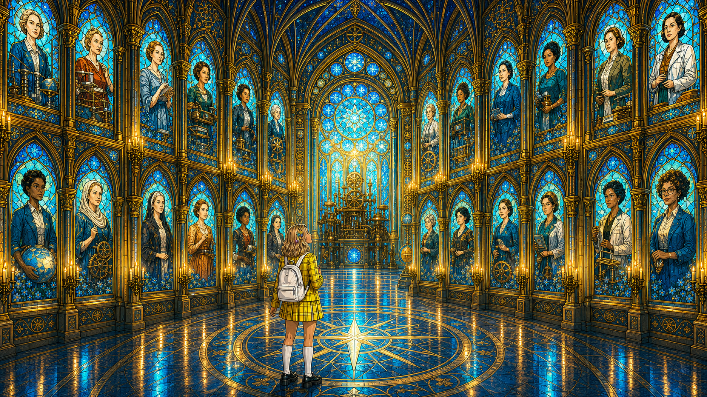
And then the lights come up, and it's just me, in the back of the LUMINAiRY, holding all of it. Almost two hundred years. A room full of women, most of whom had to fight to be believed. One very confident chatbot. And that is what's been sitting quietly in your browser tab this whole time.
Say it at happy hour
"So… is this whole AI thing brand new, or what?"
It's almost two hundred years old and about three years old at the same time. The science has been building for centuries; your access to it is brand new. And every real leap in it — the idea, the signal, the language, the finding, the sight — has a woman's name on it. Whether or not the textbook bothered to write it down.
So remember, ladies…
You were never behind on AI. You were just never told it was yours.
Got a sharper "remember, ladies" than that one? Post it in the rooms — our residents-only chats at the sorority house. Your Resident Card gets you in the door, and favourites get featured, with credit.
Next week on LAiDIES
Episode 05 · The Super Models
Our heroine opens the AI her company installed… and it answers exactly like the one she uses at home. She learns the difference between the brand on the door and the brains behind it. See you next Wednesday, in SUNNYVAiLE.
Your scene · the field trip
Go meet a Maven
No try-on task this week. Go up to the LUMINAiRY, walk into the quiet wing, and meet one MAiVEN you'd genuinely never heard of before today. Then text one friend a single sentence about her. It's very hard to feel behind on something the moment you find out it took almost two hundred years and a hundred brilliant women to hand it to you.
Meet the MAiVENS →The Vocab
AlgorithmA precise set of steps a machine follows — Ada wrote the first one.+
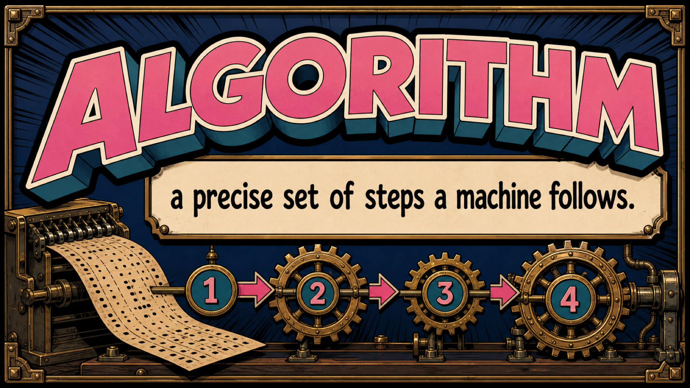
A precise, repeatable set of steps for solving a problem — the recipe a machine follows, in order, every time. Ada Lovelace wrote the first one in 1843, for a machine that wouldn't be built for another century. Not magic, not thinking: just very careful instructions, followed exactly.
CompilerA translator from human-ish words into machine code — Grace Hopper's idea.+
A translator that turns instructions written in something close to plain language into the raw code a machine actually runs. Grace Hopper built one of the first, so people would stop having to think like the machine and could tell it what they wanted in words. Every app you tap sits on top of that one idea.
AI winterA long stretch when the promises outran the results and the money froze.+
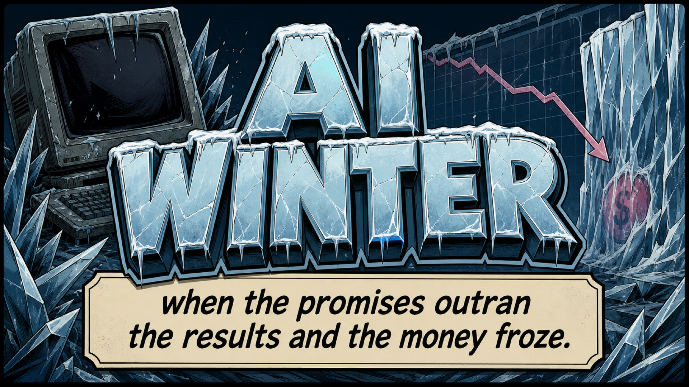
One of the long stretches — there were roughly two — when AI's big promises outran what it could actually do, the funding froze, and "artificial intelligence" became a slightly embarrassing thing to say out loud. The work didn't stop; it just went quiet, until the thaw.
Training dataThe mountain of examples a model learns from — Fei-Fei Li's millions of pictures.+
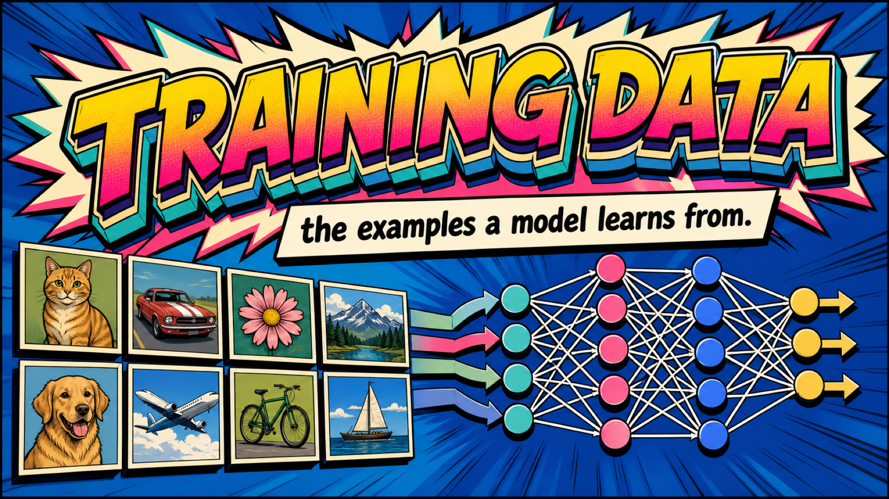
The examples a model learns from — the more it sees, the more it can do. Fei-Fei Li's insight was that the bottleneck was never the machine's "brain"; it was that no one had shown it enough of the world. Her ImageNet — millions of labeled pictures — is why, in 2012, a machine finally learned to see.